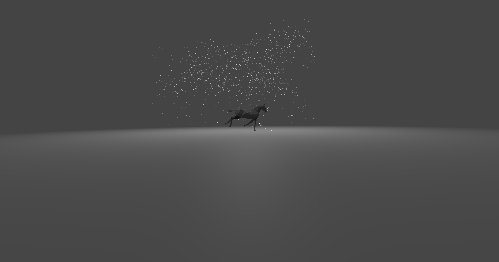
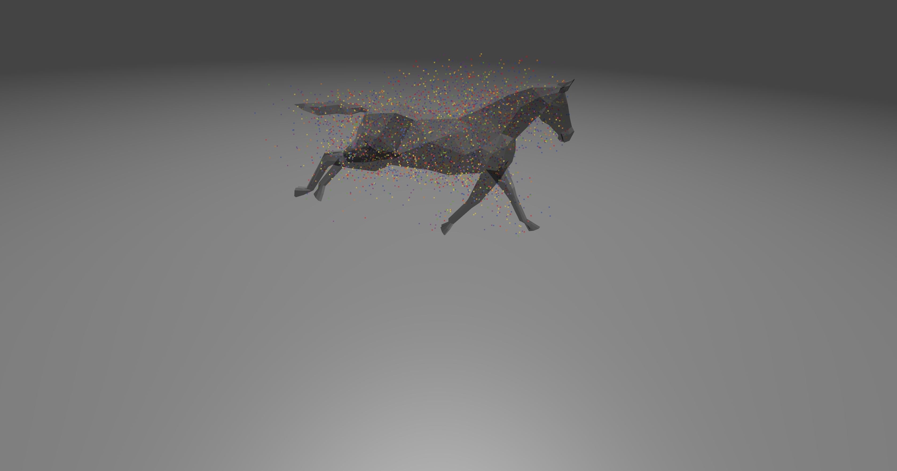
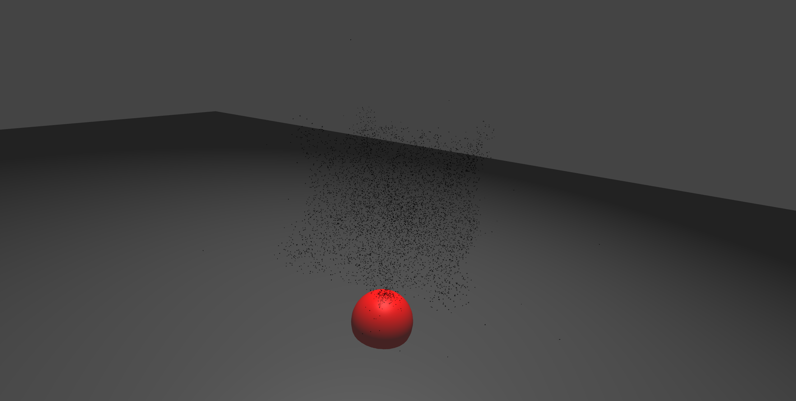
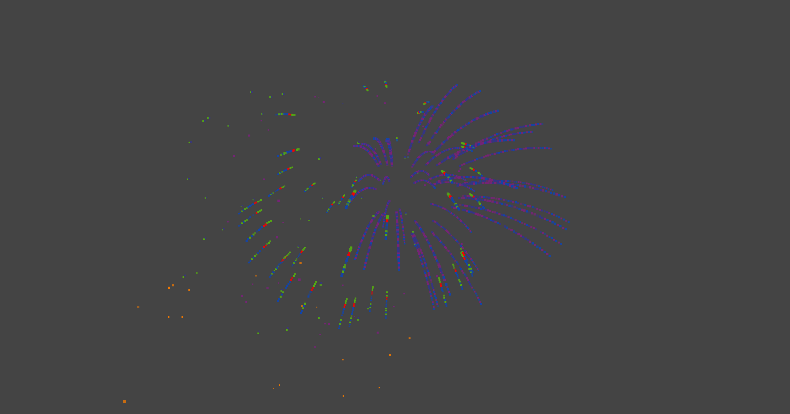
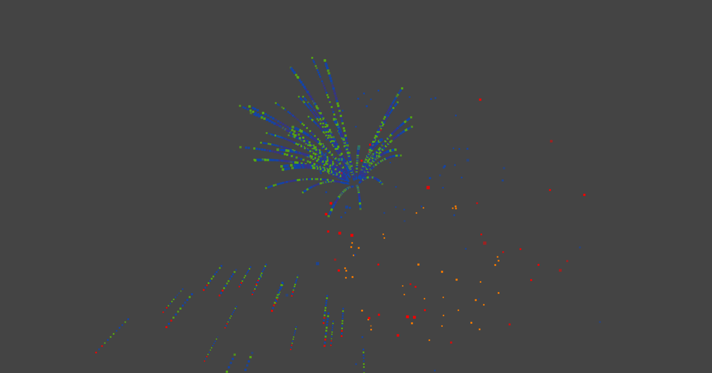
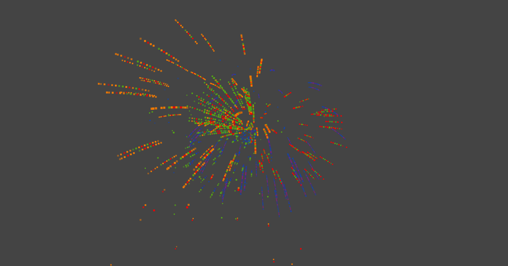

COS426 Assignment 4Animation — Writeup
- (1.0) Euler
- (1.0) Sphere source
- (1.0) Animated mesh
- (1.0) Uniform distribution
- (1.0) Ground plane
- (1.0) Sphere collision
- (2.0) Spring system
- (3.0) Your system
- (1.0) Rendering
- (1.0) Art
Euler
We added gravity (multiplied by delta_t) to velocity. We also added attractors by adding the vector from the attractor center and the particle (to direct the particle toward the attractor) and scaling by the inverse square of the distance as suggested on the example slide.
Sphere source
For sphere source, we used the algorithm provided in the lecture slides for selecting a random position on surface of sphere (slide 21), calculating the z, phi, and d as provided to get the x/y/z coordinates for the position on the sphere to set in the initializePositions() function.
Animated mesh
For animated mesh source, we used Math.random() to multiply (and floor) the length of the array of faces to select a random face. Afterwards, we found a random point by taking two Math.random()'s, checking if they sum to greater than 1 (if they do, set them to 1 subtracted by each), and using these factors to multiply the the edges (starting from an arbitrary v1) to scale to get a point within the triangle.
Uniform distribution
For the uniform distribution, we calculated the area of all faces by creating three.js triangles with them and calling their area function. Then, we divided all areas by the minimum area of the faces (rounding when applicable) to get a scaling of each area relative to a "unit size" (rounding when applicable). We used this new weight to create a new ray, filling it with the amount of units each face amounted to with the coreresponding index (e.g. if index 1 of the faces array had an area that was twice the minimum area, then 1 would go into the array twice). Then, to get the face, we similarly used Math.random() to multiply and floor the length of the array to get a random index, and retrieve the index of the original face. Afterwards, we found the point on the face the same way as listed above in "animated mesh."
Ground plane
We calculate the intersection geometrically. For "sink," if the position of a particle is beneath the plane, we kill the particle. For "bounce," if the position of a particle is beneath the plane and its velocity is in the direction of the plane (negative y component), then we negate and multiply the y component by the damping, so that the particle's direction is reflected off the plane.
Sphere collision
We calculated the intersection geometrically. If the position of a particle is within the sphere, we set the velocity to 0 (because damping = 0) and push the position to the surface of the sphere.
Spring system
We calculated the force of Hooke's Law using the equations from the lecture slide, using damping = 0. We then added the force of Hooke's Law from the points left, right, up, and down of the given point to find the total force.
Your system
We created two systems:
mySystem-bugs: Swarm of flies around a piece of fruit. Implemented using multiply attractors and a sphereSink collision that kills particles when they are inside the sphere.
mySystem-fireworks: Used the behavior of particle systems maxParticles <= particlesFreq (a bit hack-y with regard to hardware rendering, as the effect gets more interesting with timing desyncs after watching for a while) to create a fireworks effect, with bursts selecting from a random 3-color palette from the rainbow and having a random starting position close to the center in the direction of randomly pre-calculated rays, which get refreshed with every new "burst."
Rendering
For the rendering, we changed a few things to create some visual effects. For the animated horse, we made the initialized color randomly draw from a rainbow palette to try and create a "magical" effect from the particles emanating from the moving horse. For all other particles systems, we took advantage of this difference in color to control the default-colored particles and make the opacity scale (logarithmically) with the lifetime, relative to the maximum lifetime (7) to make particles fade out towards their "death."
Art
"Ghostrider" (before scaling the particles with mesh.scale)

"Rainbow horse"

"Bugs swarming"

"Fireworks!"


